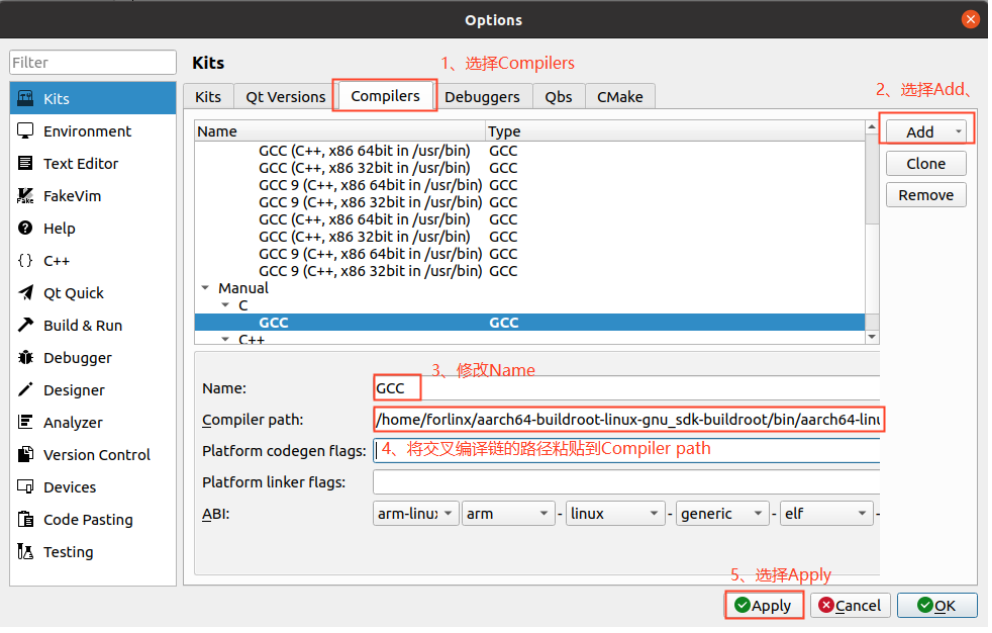
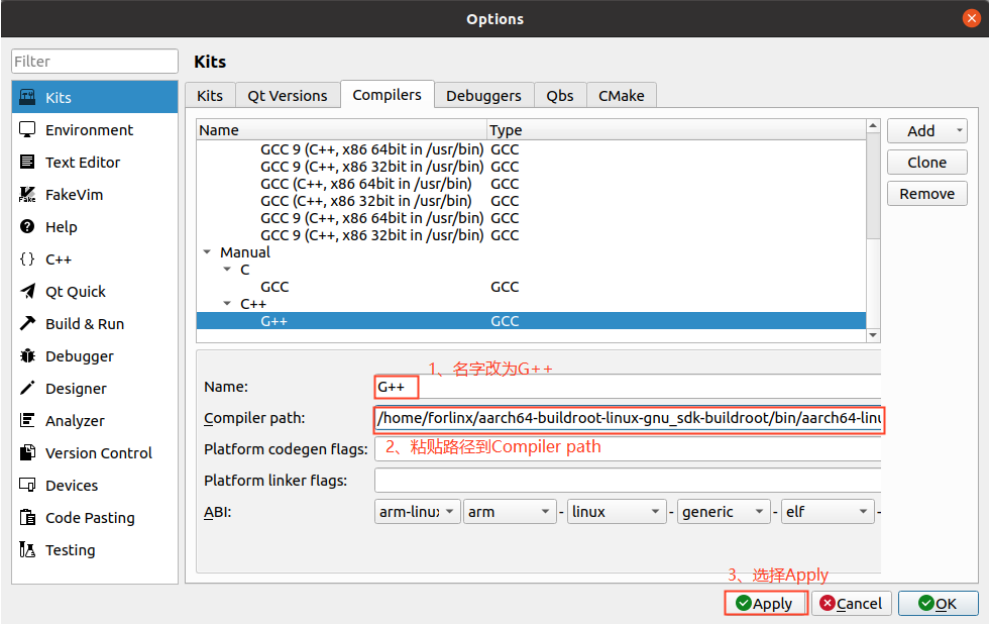
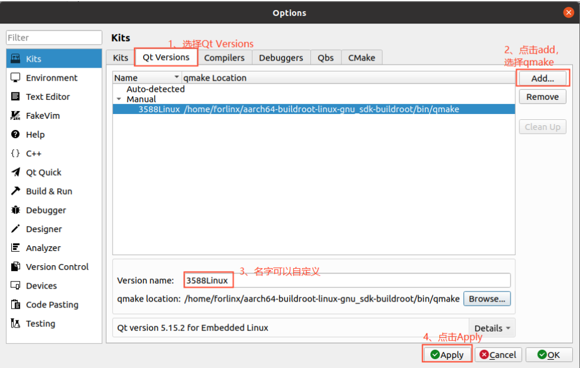
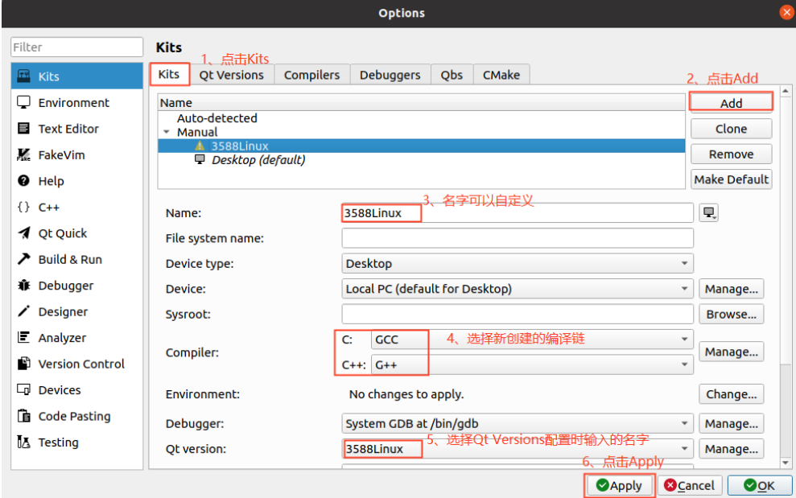

第四章 相关代码编译
本章节主要描述开发板相关源码的编译方法，包括内核源码编译、应用程序编译方法。注意：当前只提供了内核源码，本节只介绍内核和应用程序的编译方法
4.1编译前准备
4.1.1 环境说明
开发环境操作系统：Ubuntu22.04 64位版
交叉工具链：aarch64-none-linux-gnu
开发板使用Bootloader 版本：u-boot-2017.09
开发板内核版本：linux-6.1.57
4.1.2 拷贝源码
程序源码：用户资料\Linux\源码\
创建工作目录
forlinx@ubuntu:~$ mkdir -p /home/forlinx/3576 //按照顺序创建工作目录
将用户资料中的源码文件和交叉编译工具链拷贝到虚拟机/home/forlinx/3576目录。
forlinx@ubuntu:~$ cd /home/forlinx/3576 //切换到工作目录
forlinx@ubuntu:~/3576$ cat OK3576_linux_source.tar.bz2.0* >OK3576_linux_source.tar.bz2 //在当前位置解压压缩包
forlinx@ubuntu:~/3576$ tar -vxf OK3576_linux_source.tar.bz2
运行命令后等待完成即可。
4.2 源码编译
注意：
**整体编译过后，可根据实际情况再进行单独编译 **
该源码编译需要开发环境运行内存 8G 及以上，请不要修改我们提供的 VM 虚拟机镜像配置
4.2.1 全编译测试
在源码路径内，提供了编译脚本 build.sh，运行该脚本对整个源码进行编译，需要在终端切换到解压
出来的源码路径，找到 build.sh 文件。
forlinx@ubuntu: ~/3576$ cd OK3576_linux_source/ // 跳转到源码路径 |
|---|
以下操作需要在源码目录下操作，全编译方法：
forlinx@ubuntu: ~/3576$ ./build.sh chip //设置环境变量 ，这里选择ok3576 |
|---|
编译完成后，系统镜像会在output/update/image/ 文件夹中生成update.img
**注**意：update.img 为打包好用于 OTG 或者 TF 卡完全烧写用，其它文件为分步烧写使用
4.2.2 单独编译
forlinx@ubuntu: ~/3576$ cd OK3576_linux_source/ // 跳转到源码路径 |
|---|
编译成功后 update.img 里的内核不更新。请分步烧写 kernel/boot.img 文件。参考用户使用手册OTG烧写测试章节，使用生成的boot.img替换默认出厂镜像烧写即可。
4.2.3 清除编译生成的文件
用户在源码路径下进行操作
forlinx@ubuntu: ~/3576$ ./build.sh cleanall // 清理编译生成的所有文件 |
|---|
4.3 应用程序编译及运行
4.3.1 编译并运行命令行应用
本小节使用飞凌看门狗测试程序做演示，也可以自行构建工程。
1、使用cd命令进入/home/forlinx/3576目录
forlinx@ubuntu:~$ cd OK3576_linux_source/app/forlinx/forlinx_cmd/fltest_watchdog |
|---|
2、配置交叉编译器路径，使用make进行交叉编译
forlinx@ubuntu:~/3576/OK3576_linux_source/app/forlinx/forlinx_cmd/fltest_watchdog$ export CROSS_COMPILE=/home/forlinx/3576/aarch64-buildroot-linux-gnu_sdk-buildroot |
|---|
用file命令查看生成的文件信息
forlinx@ubuntu:~/3576/OK3576-linux-source/app/forlinx/forlinx_cmd/fltest_watchdog$ |
|---|
通过结果可以看到编译生成的是64位、ARM的文件。
3、将编译生成的fltest_watchdog通过U盘或者ftp等方式拷贝到板子上，比如/forlinx路径下，下述以tf卡为例，拷贝到开发板，运行测试。
[root@ok3576:/]# cp /run/media/mmcblk1p1/fltest_watchdog /home/forlinx |
|---|
参考用户使用手册“看门狗测试”章节测试。
4.4 Qt Creator 环境配置
4.4.1 交叉编译器配置
注意：默认的开发环境已经安装了交叉编译链，如果自己搭建的开发环境，需要参考 3.3 安装交叉编
译链安装交叉编译链（默认安装路径为/home/forlinx/aarch64-buildroot-linux-gnu_sdk-buildroot）
Qt的版本是Qt 5.15.11
Qt 是跨平台的图形开发库，支持众多操作系统，在进行编译前需要对 Qt Creator 的编译环境进行配置。
1、进入 qtcreator 的安装路径打开 qtcreator
forlinx@ubuntu:~/qtcreator-4.7.0/bin$ ./qtcreator & |
|---|
2、点击 Qt Creator 的 Tools ->Options->Kits->Compilers， 然后点击 Add ->GCC->C；
3、Name 输入 GCC；
4、将编译链的路径粘贴到 Compiler Path 如下图所示：
路径：/home/forlinx/aarch64-buildroot-linux-gnu_sdk-buildroot/bin/aarch64-linux-gcc

5、按照同样的方法添加 GCC 编译器，点击右侧“Add->GCC->C++”，如图所示：
路径：/home/forlinx/aarch64-buildroot-linux-gnu_sdk-buildroot/bin/aarch64-linux-g++

4.4.2 Qt Versions 配置
1、点击 Qt Creator 的 Tools ->Options->Qt Versions，
2、然后点击 Add，弹出对话框选择/home/forlinx/aarch64-buildroot-linux-gnu_sdk-buildroot/bin/qmake
3、点击 open 添加。
4、然后会返回 Qt Version 配置框，Version name 可以自行更改。
5、然后点击 Apply 及 OK。

4.4.3 Kits 配置
Kits 是一个构建套件，用来构建和选择开发编译环境，对于有多种 QT 库的项目很有用。将之前添加
的交叉编译器和 QT Version 添加到 Kits 中，构建适合开发板的编译环境。
1、点击 Qt Creator 的 Tools ->Options->Kits， 然后点击 Add，出现配置部分。
2、Name 自行更改。
3、Compiler 选择 GCC。
4、Qt version 选择 Qt version 创建时输入的名字。
5、然后点击 Apply 及 OK。
